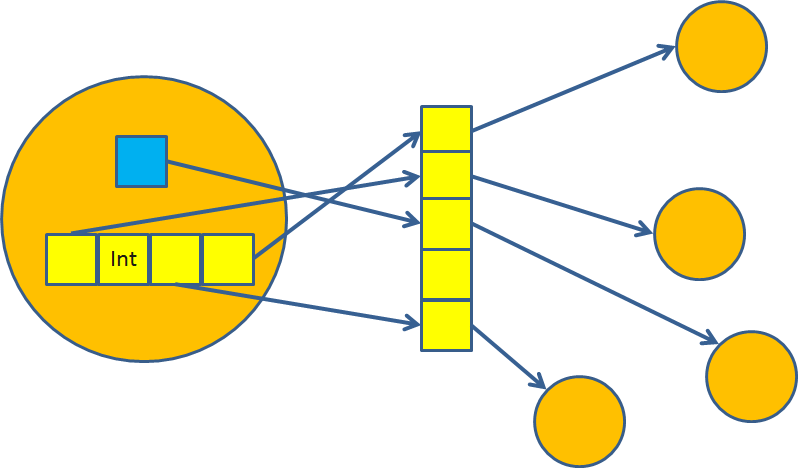

Implementing Smalltalk
Using C# and JavaScript and tutti li fiocci
Created by @ajlopez
https://github.com/ajlopez/Talks/Smalltalks2013
Using reveal.js
Agenda
- Smalltalk in C#: AjTalk
- Smalltalk in JavaScript: AjTalkJs
AjTalk
The Project
https://github.com/ajlopez/AjTalk- VM using bytecodes
- Using .NET types and libraries
- More than one VM in same process
- Using NPM for packaging
- Agents
- Remote Objects
- Transactions (a la STM)
- Minimal image
- Host Machine
- Compile with Visitors
Internal Implementation
- TBD
Object Table
AjTalk Strategy
Agents
Demos
AjTalkJs
The Project
https://github.com/ajlopez/AjTalkJs- VM using bytecodes or JavaScript
- Using Node.js modules
- Using NPM for packaging
- Running in the browser
- Samples
Node.js
http://nodejs.org/
Node.js
- JavaScript Runtime
- Based on Google V8 JavaScript Engine
- One thread for JavaScript
- Asynchronous operations via LibUv
- Native Modules
- Module Ecosystem
Vibrant Community